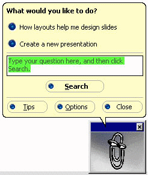

[ Contents ] [ Previous ] [ Index ]

If, at any time, you find yourself confused or needing to know how to do something not covered in this tutorial, the Help menu may provide you with an answer. To get more generalized help, select Contents from the Help menu.
PowerPoint help assistant is similar to links on the world wide web - simply click on the colorized text to get a further description of the topic. You can also choose to search for a particular topic by clicking on the Search button.
